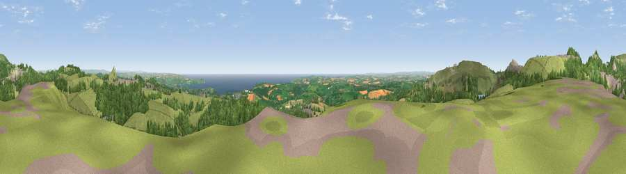

Viewpoint near Trewoon
#1048 in England · top 2% of its area beats it · near TrewoonThe view, rendered

A 360° render of this exact spot computed from the terrain model, tree cover and land cover — summer colours, afternoon light, calibrated against photographs of famous viewpoints. Real trees, hedges and buildings will differ in detail.
The panorama
Grey silhouette: terrain skyline in each direction (720 bearings, Earth curvature and refraction included). Dashed green: skyline with trees (+15 m) and buildings (+8 m) as obstacles. Blue strip: how far the ground is visible on each bearing.
Where the view opens
Wedge length = distance to the farthest visible ground on that bearing (vegetation-aware). Rings at 10, 25 and 50 km.
What fills the view
61% grassland · 27% woodland · 4% built-up · 4% cropland · 4% water
Angular shares of the visible panorama (visual magnitude), not map area. Landscape diversity 0.45 (0–1 Shannon).
Key numbers
More beautiful places nearby
The staircase of upgrades: each row has a higher view potential than everything closer. Driving times are estimates from straight-line distance, calibrated against real road routing — check an actual route before setting out.
| Place | Direction | Drive | Score |
|---|---|---|---|
| Viewpoint near Trewoon | NW · 1 km | ~4 min | 81.3 |
| Great Treverbyn Tip | ENE · 2 km | ~6 min | 82.0 |
| Viewpoint near Foxhole | W · 3 km | ~6 min | 86.4 |
| Viewpoint near Stenalees | N · 3 km | ~7 min | 88.0 |
| Viewpoint near Crackington Haven | NNE · 42 km | ~61 min | 88.1 |
| Viewpoint near Combe Martin | NNE · 111 km | ~135 min | 88.9 |
| Holdstone Hill | NNE · 112 km | ~136 min | 90.2 |
| The Knoll | ENE · 157 km | ~179 min | 91.0 |
50.35639, -4.81142 · source: screening · position refined by local search. Computed location — check access rights before visiting.